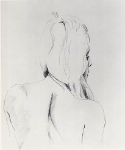
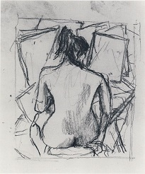
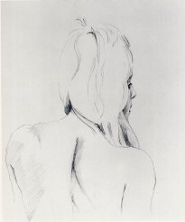
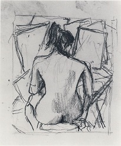

Eu cred ca imaginatia naturii este cu mult mai mare decat cea a omului, ea nu ne va lasa niciodata sa ne relaxam.
Informatii
Richard Feynman a fost unul dintre cei mai mari fizicieni ai secolului 20 care a exercitat o influenta semnificativa, nu numai in fizica, dar si in alte domenii ale cunoasterii umane.
Este recunoscut pentru caracterul lui curios si de pacalici activ de catre colegii sai in cadrul proiectelor in care a fost implicat cat si in cadrul catedrelor de la Cornell si Caltech, unde acesta a fost profesor.
Este unul dintre cei care a extins considerabil teoria electrodinamicii cuantice. A participat la Proiectul Manhattan si a fost membru al comisiei de investigare a dezastrului navetei spatiale Challenger.
Pentru intreaga sa munca la dezvoltarea electrodinamicii cuantice, Feynman a fost unul din laureatii Premiului Nobel pentru fizica în 1965, alaturi de Julian Schwinger si Sin-Itiro Tomonaga.
Richard Feynman este creditat cu crearea conceptului revolutionar de computer cuantic, precum si explorarea timpurie a acestuia.
Proiectul Manhattan
Proiectul Manhattan a fost proiectul de dezvoltare a primei arme nucleare (bomba atomică) în timpul Celui de-Al Doilea Război Mondial de către Statele Unite ale Americii, Regatul Unit și Canada.
Ceea ce a fost denumit oficial Districtul Ingineresc Manhattan, se referă anume la perioada 1941–1946, când proiectul s-a aflat sub controlul Corpului de Geniu al Armatei SUA, sub adminstrația Generalului Leslie R. Groves. Cercetarea științifică a fost condusă de fizicianul american J. Robert Oppenheimer.
Artist
 



Considerand ca nu a acordat deloc atentie laturii artistice a lumii, ci doar celei fizice si matematice, acesta a urmarit cu pasiune cantatul la tobele bongo, sustinand chiar 2 concerte in cadrul unor scenete, dar si pictura, multe dintre picturile sale fiind vandute in cadrul a doua expozitii organizate de catre admiratori ai acestuia